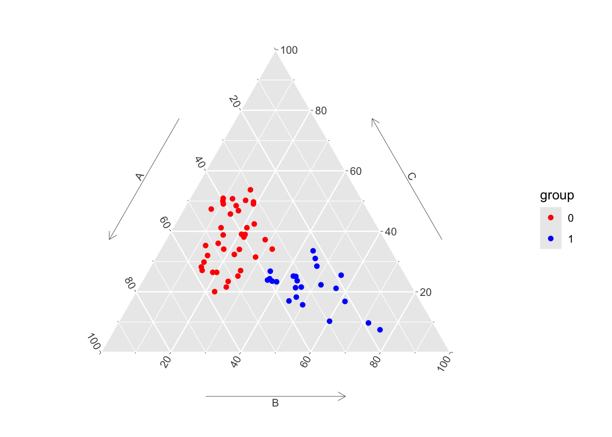
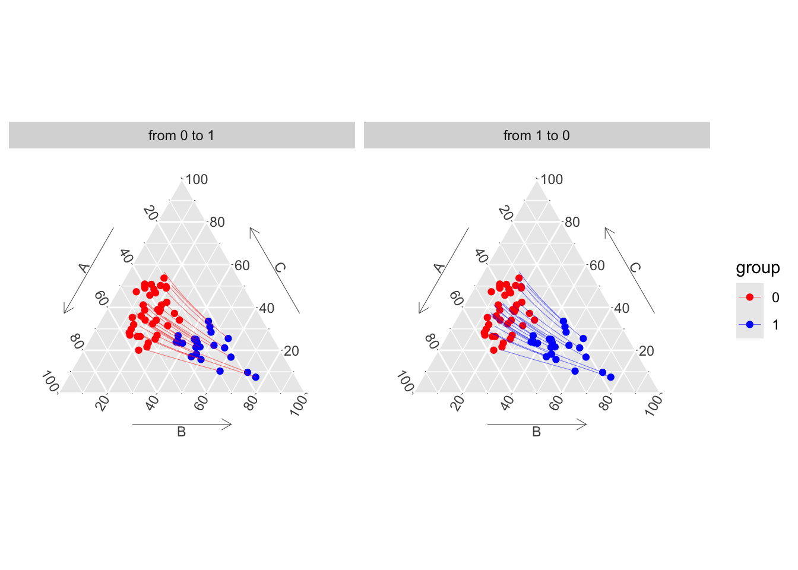
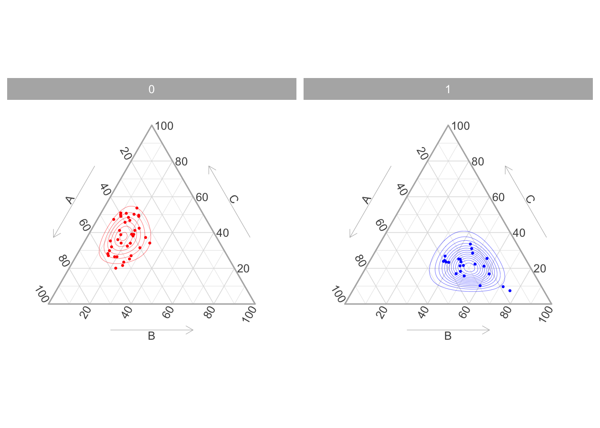
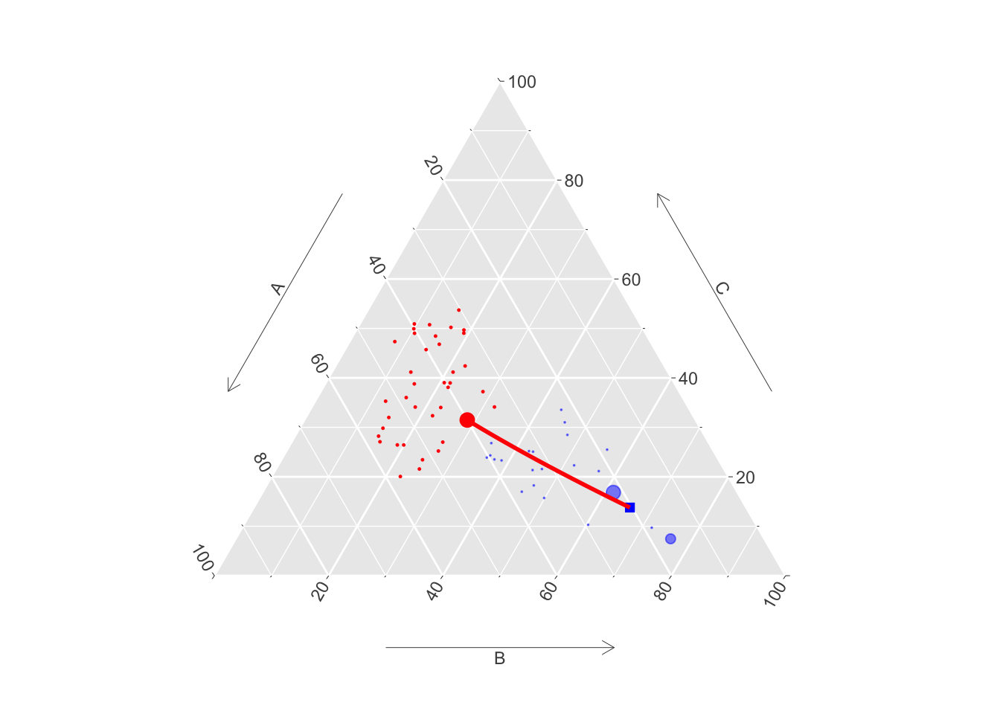

library(ggtern)
library(tidyverse)
library(compositions)
library(expm)1 Toy dataset
Objectives
We illustrate here our two approache used to build counterfactuals for compositional data. The ultimate goal is to provide a methodology to build counterfactuals for categorical data (see Chapter 2).
The first method (Chapter 1.1) consists in using Gaussian optimal transport based on an alternative representation of the probability vector (in the Euclidean space \(\mathbb{R}^{d-1}\)).
The second method (Section 1.2) uses transport and matching directly within the simplex \(\mathcal{S}_d\) using an appropriate cost function.
We illustrate the two methods using a toy dataset.
We begin with loading a few packages:
Then, we load the toy dataset:
load("../data/toydataset.RData")
str(toydataset)'data.frame': 61 obs. of 4 variables:
$ A : num 0.371 0.402 0.4 0.465 0.401 ...
$ B : num 0.145 0.207 0.285 0.265 0.142 ...
$ C : num 0.485 0.39 0.315 0.27 0.457 ...
$ group: num 0 0 0 0 0 0 0 0 0 0 ...Assume that each of the three components A, B, and C are probabilities for an observation to be in class A, B, or C. Hence, for each observation, the sum of these three components always equals 1. Further assume that the observation come from two groups: group 0 or group 1.
col_groups <- c("0" = "red", "1" = "blue")
toydataset <- as_tibble(toydataset) |>
mutate(
group = factor(group),
colour = factor(group, levels = c(1, 0), labels = c("blue", "red"))
)
toydataset# A tibble: 61 × 5
A B C group colour
<dbl> <dbl> <dbl> <fct> <fct>
1 0.371 0.145 0.485 0 red
2 0.402 0.207 0.390 0 red
3 0.400 0.285 0.315 0 red
4 0.465 0.265 0.270 0 red
5 0.401 0.142 0.457 0 red
6 0.372 0.160 0.468 0 red
7 0.574 0.225 0.201 0 red
8 0.447 0.0792 0.473 0 red
9 0.318 0.191 0.490 0 red
10 0.456 0.156 0.388 0 red
# ℹ 51 more rowsWe can use the ggtern() function from the {ggtern} package to display the observation in a ternary plot.
ggtern(
data = toydataset,
mapping = aes(x = A, y = C, z = B, colour = group)
) +
geom_point() +
scale_colour_manual(values = col_groups) +
theme(
tern.axis.arrow.show = TRUE,
tern.axis.arrow.sep = .13,
tern.axis.vshift = .05,
) +
theme_hidetitles()

The average values in each group for the components:
toydataset |>
group_by(group, colour) |>
summarise(across(c("A", "B", "C"), ~100*mean(.x))) |>
arrange(colour) |>
kableExtra::kbl(booktabs = TRUE, digits = 3) |>
kableExtra::kable_paper()| group | colour | A | B | C |
|---|---|---|---|---|
| 1 | blue | 29.831 | 48.605 | 21.564 |
| 0 | red | 43.713 | 18.572 | 37.715 |
1.1 Gaussian Mapping in the Euclidean Representation
Let \(\mathbf{X}_0\) and \(\mathbf{X}_1\) be random vectors for observations in group 0 and group 1, respectively.
Note
We want to transport values from group 0 to group group 1.
Assume that both \(\mathbf{X}_0\) and \(\mathbf{X}_1\) take values in \(\mathcal{S}_d\), and following an “normal distribution on the simplex.” Hence, for some isomorphism \(h\), the vectors of orthonormal coordinates, \(\mathbf{Z}_0=h(\mathbf{X}_0)\) and \(\mathbf{Z}_1=h(\mathbf{X}_1)\) both follow a multivariate normal distribution on \(\mathbb{R}^{d-1}\).
We assume that \(\mathbf{Z}_0\sim\mathcal{N}(\boldsymbol{\mu}_0,\boldsymbol{\Sigma}_0)\) and \(\mathbf{Z}_1\sim\mathcal{N}(\boldsymbol{\mu}_1,\boldsymbol{\Sigma}_1)\). The optimal mapping writes: \[ \mathbf{z}_{1} = T^\star(\mathbf{z}_{0})=\boldsymbol{\mu}_{1} + \boldsymbol{A}(\mathbf{z}_{0}-\boldsymbol{\mu}_{0}), \tag{1.1}\]
where \(\boldsymbol{A}\) is a symmetric positive matrix that satisfies \(\boldsymbol{A}\boldsymbol{\Sigma}_{0}\boldsymbol{A}=\boldsymbol{\Sigma}_{1}\), which has a unique solution given by \(\boldsymbol{A}=\boldsymbol{\Sigma}_{0}^{-1/2}\big(\boldsymbol{\Sigma}_{0}^{1/2}\boldsymbol{\Sigma}_{1}\boldsymbol{\Sigma}_{0}^{1/2}\big)^{1/2}\boldsymbol{\Sigma}_{0}^{-1/2}\), where \(\boldsymbol{M}^{1/2}\) is the square root of the square (symmetric) positive matrix \(\boldsymbol{M}\) based on the Schur decomposition (\(\boldsymbol{M}^{1/2}\) is a positive symmetric matrix).
Let us assume that \(h=clr\), i.e., the center log ratio (clr) transform, which is both an isomorphism and an isometry where \({\displaystyle \operatorname {clr} :S^{d}\rightarrow \mathbb {R} ^{d}}\), \[ {\displaystyle \operatorname {clr} (\mathbf{x})=\left[\log {\frac {x_{1}}{\overline{\mathbf{x}}_g}},\cdots ,\log {\frac {x_{D}}{\overline{\mathbf{x}}_g}}\right]}, \tag{1.2}\] where \(\overline{\mathbf{x}}_g\) denotes the geometric mean of \(\mathbf{x}\).
To display the path from group 0 to group 1, we use McCann (1997) displacement interpolation. This allows us to have a continuous mapping \(T_t^\star\) such that \(T_1^\star=T^\star\) and \(T_0=Id\), and so that \(\mathbf{Z}_{t}=T_t^\star(\mathbf{Z}_{0})\) has distribution \(\mathcal{N}(\boldsymbol{\mu}_t,\boldsymbol{\Sigma}_t)\) where \(\boldsymbol{\mu}_t=(1-t)\boldsymbol{\mu}_0+t\boldsymbol{\mu}_1\) and \[ \boldsymbol{\Sigma}_t = \boldsymbol{\Sigma}_0^{-1/2} \left( (1 - t) \boldsymbol{\Sigma}_0 + t \left( \boldsymbol{\Sigma}_0^{1/2} \boldsymbol{\Sigma}_1 \boldsymbol{\Sigma}_0^{1/2} \right)^{1/2} \right)^2 \boldsymbol{\Sigma}_0^{-1/2}. \]
We use
\begin{algorithm} \caption{Gaussian Based Transport of $\mathbf{x}_0$ on $\mathcal{S}_d$} \begin{algorithmic} \STATE \textbf{Input:} $\mathbf{x}_0$ ($\in\mathcal{S}_d$)\\ \STATE \textbf{Parameter:} $\{\mathbf{x}_{0,1},\cdots,\mathbf{x}_{0,n_0}\}$ and $\{\mathbf{x}_{1,1},\cdots,\mathbf{x}_{1,n_1}\}$ in $\mathcal{S}_d$;\\ \STATE $\quad$ isomorphic transformation $h:\mathcal{S}_d\to\mathbb{R}^{d-1}$\\ \STATE \textbf{Output}: $\mathbf{x}_{1}$\\ \For{$i\in\{1,\cdots,n_0\}$} \STATE $\mathbf{z}_{0,i}\gets h(\mathbf{x}_{0,i})$ \EndFor \For{$i\in\{1,\cdots,n_1\}$} \STATE $\mathbf{z}_{1,i}\gets h(\mathbf{x}_{1,i})$ \EndFor \STATE $\mathbf{m}_0\gets$ average of $\{\mathbf{z}_{0,1},\cdots,\mathbf{z}_{0,n_0}\}$\\ \STATE $\mathbf{m}_1\gets$ average of $\{\mathbf{z}_{1,1},\cdots,\mathbf{z}_{1,n_1}\}$\\ \STATE $\mathbf{S}_0\gets$ empirical variance matrix of $\{\mathbf{z}_{0,1},\cdots,\mathbf{z}_{0,n_0}\}$\\ \STATE $\mathbf{S}_1\gets$ empirical variance matrix of $\{\mathbf{z}_{1,1},\cdots,\mathbf{z}_{1,n_1}\}$\\ \STATE $\boldsymbol{A}\gets \boldsymbol{S}_{0}^{-1/2}\big(\boldsymbol{S}_{0}^{1/2}\boldsymbol{S}_{1}\boldsymbol{S}_{0}^{1/2}\big)^{1/2}\boldsymbol{S}_{0}^{-1/2}$\\ \STATE $\mathbf{x}_{1} \gets \displaystyle{h^{-1}\big(\mathbf{m}_{1} + \boldsymbol{A}(h(\mathbf{x}_{0})-\mathbf{m}_{0})\big)}$\\ \end{algorithmic} \end{algorithm}
Let us give an example with R. First, we create subset of the data for group 0 and group 1:
X0 <- toydataset |> filter(group == 0) |> select(A, B, C)
X1 <- toydataset |> filter(group == 1) |> select(A, B, C)We use the clr() function from the {compositions} package to compute the centered log ratio transform of each group:
Z0 <- matrix(clr(X0), ncol = 3)
Z1 <- matrix(clr(X1), ncol = 3)Keeping characteristics A and B only (from \(S_d\) to \(\mathbb{R}^{d-1}\)), we obtain \(h(\mathbf{x}_{0,i})\):
Z0 <- Z0[, 1:2]
Z1 <- Z1[, 1:2]We compute \(\mathbf{m}_0\) and \(\mathbf{m}_1\), the averages of \(\{\mathbf{z}_{0,1},\cdots,\mathbf{z}_{0,n_0}\}\) and \(\{\mathbf{z}_{1,1},\cdots,\mathbf{z}_{1,n_1}\}\), respectively:
m0 <- apply(Z0, 2, mean)
m1 <- apply(Z1, 2, mean)We compute \(\mathbf{S}_0\) and \(\mathbf{S}_0\), the empirical variance matrices of \(\{\mathbf{z}_{0,1},\cdots,\mathbf{z}_{0,n_0}\}\) and \(\{\mathbf{z}_{1,1},\cdots,\mathbf{z}_{1,n_1}\}\), respectively:
S0 <- var(Z0)
S1 <- var(Z1)Then, to apply optimal transport, we define the \(A\) matrix:
A <- solve(sqrtm(S0)) %*%
sqrtm(sqrtm(S0) %*% S1 %*% (sqrtm(S0))) %*%
solve(sqrtm(S0))Lastly, we can compute the transported value: \(\displaystyle{h^{-1}\big(\mathbf{m}_{1} + \boldsymbol{A}(h(\mathbf{x}_{0})-\mathbf{m}_{0})\big)}\)
For the first observation:
X0[1,] # init# A tibble: 1 × 3
A B C
<dbl> <dbl> <dbl>
1 0.371 0.145 0.485(z <- Z0[1,]) # clr[1] 0.2236776 -0.7156010transp_z <- as.numeric(m1 + A %*% (z - m0))
transp_z <- clrInv(c(transp_z, -sum(transp_z)))Now, for the McCann’s displacement interpolation, assume we want to obtain 31 intermediate points:
nb <- 31
vec_t <- seq(0, 1, lengt = nb)
vec_t [1] 0.00000000 0.03333333 0.06666667 0.10000000 0.13333333 0.16666667
[7] 0.20000000 0.23333333 0.26666667 0.30000000 0.33333333 0.36666667
[13] 0.40000000 0.43333333 0.46666667 0.50000000 0.53333333 0.56666667
[19] 0.60000000 0.63333333 0.66666667 0.70000000 0.73333333 0.76666667
[25] 0.80000000 0.83333333 0.86666667 0.90000000 0.93333333 0.96666667
[31] 1.00000000We initiate a matrix that will contain the interpolated values at each step:
transp_x <- matrix(NA, nb, 3)And we simply apply the formula:
for(i in 1:nb) {
t <- vec_t[i]
transp_z <- (1 - t) * z + t * (m1 + A %*% (z - m0))
transp_z = as.numeric(transp_z)
transp_z = c(transp_z, -sum(transp_z))
transp_x[i,] = clrInv(transp_z)
}
head(transp_x) [,1] [,2] [,3]
[1,] 0.3705655 0.1448577 0.4845768
[2,] 0.3695008 0.1511263 0.4793729
[3,] 0.3683175 0.1576141 0.4740684
[4,] 0.3670129 0.1643244 0.4686628
[5,] 0.3655842 0.1712601 0.4631557
[6,] 0.3640289 0.1784237 0.4575473We can wrap these in a small function. We actually define three functions to transport a single compositional observation from group 0 to group 1, each function considering a different transform:
transport_x_alr(): additive log ratio transform.transport_x_clr(): centered log ratio transform.transport_x_ilr(): isometric log ratio transform.
#' Gaussian-based transport of a single observation from group 0 to group 1
#' on \eqn{S_d}, using additive log ratio transform
#'
#' @param x Value to transport.
#' @param n_interp Number of points for the interpolation.
#' @param A Symmetric positive matrix from OT.
#' @param m0 Average of transformed values in group 0.
#' @param m1 Average of transformed values in group 1.
transport_x_alr <- function(x,
n_interp = 31,
A,
m0,
m1) {
z <- as.numeric(alr(as.numeric(x)))
vec_t <- seq(0, 1, length = n_interp)
transp_x <- matrix(NA, n_interp, length(x))
for(i in 1:n_interp) {
t <- vec_t[i]
transp_z <- (1 - t) * z + t * (m1 + A %*% (z - m0))
transp_z = as.numeric(transp_z)
transp_x[i,] = alrInv(transp_z)
}
transp_x
}
#' Gaussian-based transport of a single observation from group 0 to group 1
#' on \eqn{S_d}, using centered log ratio transform
#'
#' @param x Value to transport.
#' @param n_interp Number of points for the interpolation.
#' @param A Symmetric positive matrix from OT.
#' @param m0 Average of transformed values in group 0.
#' @param m1 Average of transformed values in group 1.
transport_x_clr <- function(x,
n_interp = 31,
A,
m0,
m1) {
z <- as.numeric(clr(as.numeric(x)))[1:(length(x)-1)]
vec_t <- seq(0, 1, length = n_interp)
transp_x <- matrix(NA, n_interp, length(x))
for(i in 1:n_interp) {
t <- vec_t[i]
transp_z <- (1 - t) * z + t * (m1 + A %*% (z - m0))
transp_z = as.numeric(transp_z)
transp_z = c(transp_z, -sum(transp_z))
transp_x[i,] = clrInv(transp_z)
}
transp_x
}
#' Gaussian-based transport of a single observation from group 0 to group 1
#' on \eqn{S_d}, using isometric log ratio transform
#'
#' @param x Value to transport.
#' @param n_interp Number of points for the interpolation.
#' @param A Symmetric positive matrix from OT.
#' @param m0 Average of transformed values in group 0.
#' @param m1 Average of transformed values in group 1.
transport_x_ilr <- function(x,
n_interp = 31,
A,
m0,
m1) {
z <- as.numeric(ilr(as.numeric(x)))
vec_t <- seq(0, 1, length = n_interp)
transp_x <- matrix(NA, n_interp, length(x))
for(i in 1:n_interp) {
t <- vec_t[i]
transp_z <- (1 - t) * z + t * (m1 + A %*% (z - m0))
transp_z = as.numeric(transp_z)
transp_x[i,] = ilrInv(transp_z)
}
transp_x
}Since we estimated \(\mathbf{m}_0\), \(\mathbf{m}_1\), \(\mathbf{S}_0\), \(\mathbf{S}_0\), and therefore \(A\) after using the clr transform in our example, we use the transport_x_clr() function to transport an individual from group 0 to group 1. If we want to use another transform, we need to estimate new \(\mathbf{m}_0\), \(\mathbf{m}_1\), \(\mathbf{S}_0\), \(\mathbf{S}_0\) and \(A\).
transport_x_clr(x = X0[1,], n_interp = 5, A = A, m0 = m0, m1 = m1) [,1] [,2] [,3]
[1,] 0.3705655 0.1448577 0.4845768
[2,] 0.3595718 0.1973433 0.4430849
[3,] 0.3410945 0.2628282 0.3960772
[4,] 0.3148558 0.3406194 0.3445249
[5,] 0.2816910 0.4278495 0.2904595We define two functions, get_ot_mapping() and transport_simplex(), to transport compositional data from group 0 to group 1, using a given transformation. The first one learns the mapping, and the second one applies it.
The get_ot_mapping() function.
#' Learn OT mapping from group 0 to group 1 based on the representation of the
#' composition data from the simplex (\eqn{S_d}) to a \eqn{d-1} Euclidean space.
#'
#' @param X0 Data frame with observations in group 0.
#' @param X1 Data frame with observations in group 1.
#' @param isomorphism Isomorphism used to map the composition data from the
#' simplex (\eqn{S_d}) to a \eqn{d-1} Euclidean space. Three possibilities: `"alr"`
#' (additive log ratio transform), `"clr"` (centered log ratio transform),
#' and `"ilr"` (isometric log ratio transform).
#'
#' @returns A list with the following elements:
#' * `m0`, `m1`: empirical mean of \eqn{z_0} and \eqn{z_1} (vectors of orthonormal
#' coordinates).
#' * `S0`, `S1`: empirical covariance matrices of \eqn{z_0} and \eqn{z_1}.
#' * `A`: symmetric positive matrix that satisfies
#' \eqn{\bf{A}\bf{\Sigma}_{0}\bf{A}=\bf{\Sigma}_{1}}
#' * `isomorphism`: name of the isomorphism used (alr, clr, irl).
#'
#' @importFrom compositions alr clr ilr alrInv clrInv ilrInv
#' @importFrom stats var
#' @importFrom expm sqrtm
get_ot_mapping <- function(X0,
X1,
isomorphism = c("clr", "alr", "ilr")) {
isomorphism <- match.arg(isomorphism)
if (isomorphism == "alr") {
Z0 <- alr(X0)
Z1 <- alr(X1)
transport_f_x <- transport_x_alr
} else if (isomorphism == "clr") {
Z0 <- matrix(clr(X0), ncol = ncol(X0))
Z1 <- matrix(clr(X1), ncol = ncol(X1))
Z0 <- Z0[, 1:(ncol(Z0)-1)]
Z1 <- Z1[, 1:(ncol(Z1)-1)]
transport_f_x <- transport_x_clr
} else {
Z0 <- ilr(X0)
Z1 <- ilr(X1)
transport_f_x <- transport_x_ilr
}
# empirical mean in each group
m0 <- apply(Z0, 2, mean)
m1 <- apply(Z1, 2, mean)
# empirical variance in each group
S0 <- var(Z0)
S1 <- var(Z1)
A <- solve(sqrtm(S0)) %*%
sqrtm(sqrtm(S0) %*% S1 %*% (sqrtm(S0))) %*%
solve(sqrtm(S0))
list(
m0 = m0,
m1 = m1,
S0 = S0,
S1 = S1,
A = A,
isomorphism = isomorphism
)
}The transport_simplex() function.
#' Transport compositional data from group 0 to group 1
#'
#' @param X0 Data frame with observations in group 0.
#' @param X1 Data frame with observations in group 1.
#' @param isomorphism Isomorphism used to map the composition data from the
#' simplex (\eqn{S_d}) to a \eqn{d-1} Euclidean space. Three possibilities: `"alr"`
#' (additive log ratio transform), `"clr"` (centered log ratio transform),
#' and `"ilr"` (isometric log ratio transform).
#' @param n_interp Number of steps in the interpolation (default to 1: no
#' interpolation).
#'
#' @returns A tibble with the transported values. If `n_interp` is larger than
#' 1, the result also contains a list with the interpolated values, in the
#' `"interpolated"` attribute ; else, the attribute is `NULL`. The attribute
#' `"ot_mapping"` stores the mapping.
#'
#' @references McCann, Robert J. 1997. "A Convexity Principle for Interacting
#' Gases." Advances in Mathematics 128 (1): 153–79.
#'
#' @importFrom rlang set_names
#' @importFrom tibble as_tibble
#' @importFrom purrr list_rbind map
#' @importFrom dplyr slice_tail
transport_simplex <- function(X0,
X1,
isomorphism = c("clr", "alr", "ilr"),
n_interp = 1) {
isomorphism <- match.arg(isomorphism)
ot_mapping <- get_ot_mapping(X0 = X0, X1 = X1, isomorphism = isomorphism)
# empirical mean in each group
m0 <- ot_mapping$m0
m1 <- ot_mapping$m1
# empirical variance in each group
S0 <- ot_mapping$S0
S1 <- ot_mapping$S1
A <- ot_mapping$A
if (isomorphism == "alr") {
transport_f_x <- transport_x_alr
} else if (isomorphism == "clr") {
transport_f_x <- transport_x_clr
} else {
transport_f_x <- transport_x_ilr
}
transported <- map(
1:nrow(X0),
~{
transp_val <- transport_f_x(
x = X0[.x, ], n_interp = n_interp, A = A, m0 = m0, m1 = m1
)
colnames(transp_val) <- colnames(X0)
as_tibble(transp_val)
}
)
if (n_interp == 1) {
transported_val <- transported |> list_rbind()
interpolated <- NULL
} else {
transported_val <- map(transported, ~slice_tail(.x, n = 1)) |> list_rbind()
interpolated <- transported
}
structure(
transported_val,
interpolated = interpolated,
ot_mapping = ot_mapping
)
}
#' Extract the interpolated values of transported vectors of compositional data
#'
#' @param x Transported compositional data.
#' @returns A list with the interpolated values. Each element contains a tibble
#' giving the interpolated values for an observation.
interpolated <- function(x) {
attr(x, "interpolated")
}For the record, we also create a function (not used here) to transport a new observation. This function can be applied after a mapping has already been learned (it allows to avoid estimating again the mapping).
The transport_simplex_new() function.
#' Transport new compositional data from group 0 to group 1 using a previously
#' learned mapping.
#'
#' @param transport Previously learned mapping.
#' @param newdata New data frame with composition data.
#' @param n_interp Number of steps in the interpolation (default to 1: no
#' interpolation).
#'
#' @returns A tibble with the transported values. If `n_interp` is larger than
#' 1, the result also contains a list with the interpolated values, in the
#' `"interpolated"` attribute ; else, the attribute is `NULL`. The attribute
#' `"ot_mapping"` stores the mapping.
#'
#' @references McCann, Robert J. 1997. "A Convexity Principle for Interacting
#' Gases." Advances in Mathematics 128 (1): 153–79.
#'
#' @importFrom rlang set_names
#' @importFrom tibble as_tibble
#' @importFrom purrr list_rbind map
#' @importFrom dplyr slice_tail
#' @export
#' @md
#' @examples
#' # First three columns: probabilities of being of class A, B, or C.
#' # Last column: group (0 or 1)
#' data(toydataset)
#' X0 <- toydataset[toydataset$group == 0, c("A", "B", "C")]
#' X1 <- toydataset[toydataset$group == 1, c("A", "B", "C")]
#'
#' # Transport only, from group 0 to group 1, using centered log ratio transform:
#' transp <- transport_simplex(X0 = X0, X1 = X1, isomorphism = "clr")
#' head(transp)
#'
#' # If we want to transport new points:
#' new_obs <- data.frame(A = c(.2, .1), B = c(.6, .5), C = c(.2, .4))
#' transp_new_obs <- transport_simplex_new(transport = transp, newdata = new_obs)
#' transp_new_obs
#'
#' # If we want to get interpolated values using McCann (1997) displacement
#' # interpolation: (here, with 5 intermediate points)
#' transp_new_obs_with_interp <- transport_simplex_new(
#' transport = transp, newdata = new_obs, n_interp = 5
#' )
#' interpolated(transp_new_obs_with_interp)[[1]] # first new obs
#' interpolated(transp_new_obs_with_interp)[[2]] # second new obs
transport_simplex_new <- function(transport,
newdata,
n_interp = 1) {
ot_mapping <- attr(transport, "ot_mapping")
# empirical mean in each group
m0 <- ot_mapping$m0
m1 <- ot_mapping$m1
# empirical variance in each group
S0 <- ot_mapping$S0
S1 <- ot_mapping$S1
A <- ot_mapping$A
isomorphism <- ot_mapping$isomorphism
if (isomorphism == "alr") {
transport_f_x <- transport_x_alr
} else if (isomorphism == "clr") {
transport_f_x <- transport_x_clr
} else {
transport_f_x <- transport_x_ilr
}
transported <- map(
1:nrow(newdata),
~{
transp_val <- transport_f_x(
x = newdata[.x, ], n_interp = n_interp, A = A, m0 = m0, m1 = m1
)
colnames(transp_val) <- colnames(newdata)
as_tibble(transp_val)
}
)
if (n_interp == 1) {
transported_val <- transported |> list_rbind()
interpolated <- NULL
} else {
transported_val <- map(transported, ~slice_tail(.x, n = 1)) |> list_rbind()
interpolated <- transported
}
structure(
transported_val,
interpolated = interpolated,
ot_mapping = ot_mapping
)
}The counterfactuals using the clr transformation and Gaussian optimal transports \(\mu_{\textcolor{red}{0}}\mapsto\mu_{\textcolor{blue}{1}}\), is obtained as follows:
transp_val_clr_0_1 <- transport_simplex(X0 = X0, X1 = X1, n_interp = 31)And the counterfactuals using the clr transformation and Gaussian optimal transports \(\mu_{\textcolor{blue}{1}}\mapsto\mu_{\textcolor{red}{0}}\):
transp_val_clr_1_0 <- transport_simplex(X0 = X1, X1 = X0, n_interp = 31)Let us plot the counterfactuals from group 0 to group 1 on a ternary plot, and show the displacement interpolation.
Code to create the Figure.
# Add group
transp_val_clr_inter_0_1 <-
interpolated(transp_val_clr_0_1) |> list_rbind(names_to = "id_obs") |>
left_join(
toydataset |> filter(group == 0) |> mutate(id_obs = row_number()) |>
select(id_obs, group, colour),
by = "id_obs"
)
transp_val_clr_inter_1_0 <-
interpolated(transp_val_clr_1_0) |> list_rbind(names_to = "id_obs") |>
left_join(
toydataset |> filter(group == 1) |> mutate(id_obs = row_number()) |>
select(id_obs, group, colour),
by = "id_obs"
)
transp_val_clr_inter_both <-
transp_val_clr_inter_0_1 |> mutate(type = "from 0 to 1") |>
bind_rows(
transp_val_clr_inter_1_0 |> mutate(type = "from 1 to 0")
)
ggtern(
data = toydataset,
mapping = aes(x = A, y = C, z = B, colour = group)
) +
geom_point() +
geom_line(
data = transp_val_clr_inter_both, linewidth = .1,
mapping = aes(group = id_obs)
) +
scale_colour_manual(values = col_groups) +
facet_wrap(~type) +
theme(
tern.axis.arrow.show = TRUE,
tern.axis.arrow.sep = .13,
tern.axis.vshift = .05,
) +
theme_hidetitles()Code to create the Figure.
transp_val_alr_0_1 <- transport_simplex(X0 = X0, X1 = X1, n_interp = 31, isomorphism = "alr")
transp_val_alr_1_0 <- transport_simplex(X0 = X1, X1 = X0, n_interp = 31, isomorphism = "alr")
# Add group
transp_val_alr_inter_0_1 <-
interpolated(transp_val_alr_0_1) |> list_rbind(names_to = "id_obs") |>
left_join(
toydataset |> filter(group == 0) |> mutate(id_obs = row_number()) |>
select(id_obs, group, colour),
by = "id_obs"
)
transp_val_alr_inter_1_0 <-
interpolated(transp_val_alr_1_0) |> list_rbind(names_to = "id_obs") |>
left_join(
toydataset |> filter(group == 1) |> mutate(id_obs = row_number()) |>
select(id_obs, group, colour),
by = "id_obs"
)
transp_val_alr_inter_both <-
transp_val_alr_inter_0_1 |> mutate(type = "from 0 to 1") |>
bind_rows(
transp_val_alr_inter_1_0 |> mutate(type = "from 1 to 0")
)
ggtern(
data = toydataset,
mapping = aes(x = A, y = C, z = B, colour = group)
) +
geom_point() +
geom_line(
data = transp_val_alr_inter_both, linewidth = .1,
mapping = aes(group = id_obs)
) +
scale_colour_manual(values = col_groups) +
facet_wrap(~type) +
theme(
tern.axis.arrow.show = TRUE,
tern.axis.arrow.sep = .13,
tern.axis.vshift = .05,
) +
theme_hidetitles()Code to create the Figure.
transp_val_ilr_0_1 <- transport_simplex(X0 = X0, X1 = X1, n_interp = 31, isomorphism = "ilr")
transp_val_ilr_0_1 <- transport_simplex(X0 = X1, X1 = X0, n_interp = 31, isomorphism = "ilr")
# Add group
transp_val_ilr_inter_0_1 <-
interpolated(transp_val_ilr_0_1) |> list_rbind(names_to = "id_obs") |>
left_join(
toydataset |> filter(group == 0) |> mutate(id_obs = row_number()) |>
select(id_obs, group, colour),
by = "id_obs"
)
transp_val_ilr_inter_1_0 <-
interpolated(transp_val_ilr_0_1) |> list_rbind(names_to = "id_obs") |>
left_join(
toydataset |> filter(group == 1) |> mutate(id_obs = row_number()) |>
select(id_obs, group, colour),
by = "id_obs"
)
transp_val_ilr_inter_both <-
transp_val_ilr_inter_0_1 |> mutate(type = "from 0 to 1") |>
bind_rows(
transp_val_ilr_inter_1_0 |> mutate(type = "from 1 to 0")
)
ggtern(
data = toydataset,
mapping = aes(x = A, y = C, z = B, colour = group)
) +
geom_point() +
geom_line(
data = transp_val_ilr_inter_both, linewidth = .1,
mapping = aes(group = id_obs)
) +
scale_colour_manual(values = col_groups) +
facet_wrap(~type) +
theme(
tern.axis.arrow.show = TRUE,
tern.axis.arrow.sep = .13,
tern.axis.vshift = .05,
) +
theme_hidetitles()

Let us compute the average values of the three components of \(\mathbf{x}\)’s and \(T^\star(\mathbf{x})\)’s.
Codes to create the Table.
toydataset |>
mutate(type = "initial") |>
rename(init_group = group, init_colour = colour) |>
bind_rows(
transp_val_clr_0_1 |>
mutate(
init_group = factor(0, levels = c(0,1)),
init_colour = "red", type = "Transported: clr_0_1")
) |>
bind_rows(
transp_val_clr_1_0 |>
mutate(
init_group = factor(1, levels = c(0,1)),
init_colour = "blue", type = "Transported: clr_1_0")
) |>
mutate(
type = factor(
type, levels = c("initial", "Transported: clr_0_1",
"Transported: clr_1_0")
)
) |>
group_by(type, init_group, init_colour) |>
summarise(across(c("A", "B", "C"), ~100*mean(.x))) |>
arrange(type) |>
kableExtra::kbl(booktabs = TRUE, digits = 3) |>
kableExtra::kable_paper()| type | init_group | init_colour | A | B | C |
|---|---|---|---|---|---|
| initial | 0 | red | 43.713 | 18.572 | 37.715 |
| initial | 1 | blue | 29.831 | 48.605 | 21.564 |
| Transported: clr_0_1 | 0 | red | 29.670 | 48.826 | 21.504 |
| Transported: clr_1_0 | 1 | blue | 43.728 | 18.553 | 37.719 |
The transformed points \(\mathbf{z}=h(\mathbf{x})\) are supposed to be normally distributed. Recall that we used multivariate optimal transport. Hence, \(T_t^\star\) is linear in \(\mathbb{R}^{d-1}\), as given by expression Equation 1.1, as well as displacement interpolation, corresponding to red and blue segments in Figure 1.5. Note that in fig-ternary-clr-toydataset, in the original space, \(t\mapsto \mathbf{x}_{t}:=h^{-1}(\mathbf{z}_{t})\) is nonlinear.
Codes to create the Figure.
transported_z_0 <-
apply(Z0, MARGIN = 1, function(z) as.numeric(m1 + A %*% (z - m0))) |>
t() |>
as_tibble()Warning: The `x` argument of `as_tibble.matrix()` must have unique column names if
`.name_repair` is omitted as of tibble 2.0.0.
ℹ Using compatibility `.name_repair`.Codes to create the Figure.
colnames(transported_z_0) <- c("V1_t", "V2_t")
transported_z_1 <-
apply(Z1, MARGIN = 1, function(z) as.numeric(m0 + A %*% (z - m1))) |>
t() |>
as_tibble()
colnames(transported_z_1) <- c("V1_t", "V2_t")
map_both <- bind_cols(transported_z_0, as_tibble(Z0)) |>
mutate(
group = factor(0, levels = c(0, 1)),
type = "group 0 to 1"
) |>
bind_rows(
bind_cols(transported_z_1, as_tibble(Z1)) |>
mutate(
group = factor(1, levels = c(0, 1)),
type = "group 1 to 0")
)
ggplot(
data = as_tibble(Z0) |> mutate(group = 0) |>
bind_rows(
as_tibble(Z1) |> mutate(group = 1)
) |>
mutate(group = factor(group)),
mapping = aes(x = V1, y = V2, colour = group)
) +
geom_point() +
geom_segment(
data = map_both,
mapping = aes(xend = V1_t, yend = V2_t)
) +
scale_colour_manual(values = col_groups) +
coord_equal(xlim = c(-1.3, 1.3)) +
labs(x = NULL, y = NULL) +
facet_wrap(~type) +
stat_ellipse()We can also visualize the estimation of density of the Dirichlet distributions fitted on the dataset (using {VGAM}). First,
dir_0 <- VGAM::vglm(
cbind(A,B,C) ~ 1,
VGAM::dirichlet,
data = toydataset |> filter(group == 0),
trace = FALSE, crit = "coef"
)
dir_1 <- VGAM::vglm(
cbind(A,B,C) ~ 1,
VGAM::dirichlet,
data = toydataset |> filter(group == 1),
trace = FALSE, crit = "coef"
)
VGAM::Coef(dir_0) shape1 shape2 shape3
15.103469 6.495072 12.885080 VGAM::Coef(dir_1) shape1 shape2 shape3
9.211557 14.880295 6.655682 We prepare a grid to visualize the estimated densities.
u <- (0:100) / 100
u <- u[-c(1, length(u))]
x <- expand.grid(u, u)
x <- cbind(x, w = 1 - rowSums(x))
# keep only valid points inside the simplex
x <- x[rowSums(x >= 0) == 3, ]
# Density for the Dirichlet distribution
z_0 <- gtools::ddirichlet(x, alpha = VGAM::Coef(dir_0))
z_1 <- gtools::ddirichlet(x, alpha = VGAM::Coef(dir_1))
z_0[is.infinite(z_0)] <- NA
z_1[is.infinite(z_1)] <- NA
# Matrix for contouring
mat_0 <- mat_1 <- matrix(NA, length(u), length(u))
for (i in seq_len(nrow(x))) {
iu <- which.min(abs(u - x[i, 1]))
iv <- which.min(abs(u - x[i, 2]))
mat_0[iu, iv] <- z_0[i]
mat_1[iu, iv] <- z_1[i]
}
# Extract contour lines
CL_0 <- contourLines(u, u, mat_0)
CL_1 <- contourLines(u, u, mat_1)
# Format in a data frame with ternary coordinates
contour_df_0 <- do.call(
rbind,
lapply(
seq_along(CL_0), function(i) {
L <- CL_0[[i]]
tibble(
x = L$x,
y = L$y,
z = 1 - L$x - L$y,
group_obs = i,
level = L$level
)
}
)
)
contour_df_1 <- do.call(
rbind,
lapply(
seq_along(CL_1), function(i) {
L <- CL_1[[i]]
tibble(
x = L$x,
y = L$y,
z = 1 - L$x - L$y,
group_obs = i,
level = L$level
)
}
)
)
contour_df <-
contour_df_0 |> mutate(group = "0") |>
bind_rows(contour_df_1 |> mutate(group = "1")) |>
rename(A = x, B = y, C = z)The estimated densities are shown in Figure 1.6.
Codes to create the Figure.
ggtern() +
# Add points
geom_point(
data = toydataset,
mapping = aes(x = A, y = C, z = B, colour = group),
size = 0.5
) +
# Add contour lines
geom_path(
data = contour_df,
mapping = aes(x = A, y = C, z = B, group = group_obs, colour = group),
linewidth = .1
) +
facet_wrap(~ group) +
scale_colour_manual(values = col_groups) +
guides(colour = "none") +
theme_light() +
theme(
tern.axis.arrow.show = TRUE,
tern.axis.arrow.sep = .13,
tern.axis.vshift = .05,
) +
theme_hidetitles()

1.2 Optimal Transport for Measures on \(\mathcal{S}_d\)
A function \(\psi:\mathcal{S}_d\to\mathbb{R}\) is exponentially concave if \(\exp[\psi]:\mathcal{S}_d\to\mathbb{R}_+\) is concave. As a consequence, such a function \(\psi\) is differentiable almost everywhere. Let \(\nabla \psi\) and \(\nabla_{\overrightarrow{u}} \psi\) denote, respectively, its gradient, and its directional derivative. Following Pal and Wong (2020), define an allocation map generated by \(\psi\), \(\pi_\psi:\mathcal{S}_d\to\mathcal{S}_d\) defined as \[ \pi_\psi(\mathbf{x})=\left[ x_1\big(1+\nabla_{\overrightarrow{e}_1-\mathbf{x}} \psi(\mathbf{x}) \big), \cdots, x_d\big(1+\nabla_{\overrightarrow{e}_d-\mathbf{x}} \psi(\mathbf{x}) \big) \right], \tag{1.3}\] where \(\left\{\overrightarrow{e}_1,\cdots,\overrightarrow{e}_{d}\right\}\) is the standard orthonormal basis of \(\mathbb{R} ^{d}\).
Consider the Monge-Kantorovitch optimal transport problem on the unit simplex, with the following cost function (Pal and Wong 2020):
\[ c(\mathbf{x},\mathbf{y})=\log\left(\frac{1}{d}\sum_{i=1}^d\frac{y_i}{x_i}\right)-\frac{1}{d}\sum_{i=1}^d\log\left(\frac{y_i}{x_i}\right), \quad \mathbf{x},\mathbf{y} \in \mathcal{S}_d. \tag{1.4}\]
From Theorem 1 in Pal and Wong (2020), for this cost function, there exists an exponentially concave function \(\psi^\star:\mathcal{S}_d\to\mathbb{R}\) such that \[ T^\star(\mathbf{x}) = \mathbf{x}\diamond \pi_{\psi^\star}\big(\mathbf{x}^{-1}\big) \tag{1.5}\] defines a push-forward from \(\mathbb{P}_0\) to \(\mathbb{P}_1\), and the coupling \((\mathbf{x},T^\star(\mathbf{x}))\) is optimal for Monge problem, and is unique if \(\mathbb{P}_0\) is absolutely continuous.
With these theoretical properties recalled, we can turn to matching. Consider two samples in the \(\mathcal{S}_d\) simplex, \(\{\mathbf{x}_{0,1},\cdots,\mathbf{x}_{0,n_0}\}\) and \(\{\mathbf{x}_{1,1},\cdots,\mathbf{x}_{1,n_1}\}\). The discrete version of the Kantorovich problem is \[ \underset{\mathrm{P}\in U(n_{0},n_{1})}{\min} \left\lbrace \sum_{i=1}^{{n_{0}}} \sum_{j=1}^{{n_{1}}} \mathrm{P}_{i,j}\mathrm{C}_{i,j} \right\rbrace \tag{1.6}\]
where, as in Brualdi (2006), \(U(n_{0},n_{1})\) is the set of \({n_{0}}\times {n_{1}}\) matrices corresponding to the convex transportation polytope \[ U(n_{0},n_{1})=\left\lbrace \mathrm{P}:\mathrm{P}\boldsymbol{1}_{{n_{1}}}=\boldsymbol{1}_{n_{0}}\text{ and }{\mathrm{P}}^\top\boldsymbol{1}_{{n_{0}}}=\frac{n_0}{n_1}\boldsymbol{1}_{n_{1}} \right\rbrace, \tag{1.7}\] and where \(\mathrm{C}\) denotes the \({n_{0}}\times {n_{1}}\) cost matrix, \(\mathrm{C}_{i,j}=c(\mathbf{x}_i,\mathbf{x}_{j})\), associated with cost from Equation (Equation 1.4).
Let us use the procedure explained in Peyré, Cuturi, et al. (2019) (with a specific cost function, from Equation 1.4) to couple samples on \(\mathcal{S}_d\), summarized in Algorithm 1.2.
\begin{algorithm} \caption{Coupling samples on $\mathcal{S}_d$} \begin{algorithmic} \STATE \textbf{Input:} $\{\mathbf{x}_{0,1},\cdots,\mathbf{x}_{0,n_0}\}$ and $\{\mathbf{x}_{1,1},\cdots,\mathbf{x}_{1,n_1}\}$ in $\mathcal{S}_d$;\\ \STATE \textbf{Input:} weight matching matrix $n_0\times n_1$ $\mathbf{P}^*$\\ \STATE $\mathbf{C} \gets $ matrix $n_0\times n_1$, $\mathbf{C}_{i,j}=c(\mathbf{x}_i,\mathbf{x}_j)$\\ \STATE $\mathbf{P}^\star \gets$ solution the discrete Kantorovich problem, using LP libraries \end{algorithmic} \end{algorithm}
First, we define the cost function:
#' Cost function for optimal transport on the unit simplex
d_s <- function(x, y) {
d <- length(x)
log(mean(y / x)) - mean(log(y / x))
}Then, we need to define a few helper functions to solve the optimal transport problem.
A few helper functions.
#' Pairwise distance matrix on the simplex
#'
#' @description
#' Computes the pairwise distance matrix of observations in the simplex, using
#' the cost function for optimal transport on the unit simplex as the distance
#' metric.
#'
#' @param X Matrice of observations (one observation per row).
#' @param Y Matrice of observations (one observation per row).
#'
#' @returns A matrix of size m x n, where m is the number of observation in X,
#' and n is the number of observations in X, containing the distances between
#' observations in X and Y.
#' @noRd
compute_pdist_simplex <- function(X, Y) {
M <- matrix(NA, nrow(X), nrow(Y))
for (i in 1:nrow(X)) {
for (j in 1:nrow(Y)) {
M[i, j] <- d_s(X[i, ], Y[j, ])
}
}
M
}
#' Ensures that a weight vector (marginal distribution) is valid
#'
#' @description
#' Returns a uniform weight if the provided vector if NULL. Otherwise, checks
#' if the vector has length M and nonnegative entries, and if so, normalizes
#' the vector of weights to sum to 1.
#'
#' @param mvec (Optional) Vector of weights.
#' @param M Length of the weight vector.
#' @param fname Name of the distance used (string).
#' @noRd
valid_single_marginal <- function(mvec, M, fname) {
dname <- paste0("'", deparse(substitute(mvec)), "'")
if ((length(mvec) == 0) && is.null(mvec)) {
return(rep(1 / M, M))
} else {
mvec <- as.vector(mvec)
if ((length(mvec) != M) || (any(mvec < 0))) {
stop(
paste0(
"* ", fname, " : ", dname,
" should be a nonnegative vector of length ",M,"."
)
)
}
return(mvec / base::sum(mvec))
}
}
#' Solving the Optimal Transport Problem
#'
#' @description
#' Finds the optimal transport plan using linear programming.
#' In a first attempts, it uses `CVXR::solve` with the OSQP solver.
#' If this fails, it uses `lpSolve::lp` instead.
#' The function minimizes the transport cost while ensuring:
#' * Mass conservation (row and column sums match the marginals).
#' * Nonnegative transport flows.
#'
#' @param dxy Cost matrix of transport distances between points in X and Y.
#' @param wx Weights (marginal distribution) for X.
#' @param wy Weights (marginal distribution) for Y.
#' @param p Order of the Wassterstein distance. (If p=2: squared Euclidean
#' cost).
#'
#' @importFrom CVXR Variable Minimize matrix_trace Problem solve
#' @importFrom lpSolve lp
#'
#' @noRd
wass_lp <- function(dxy,
wx,
wy,
p) {
cxy <- (dxy)
m <- length(wx)
ww_m <- matrix(wx, ncol = 1)
n <- length(wy)
ww_n <- matrix(wy, nrow = 1)
ones_m <- matrix(rep(1, n), ncol = 1)
ones_n <- matrix(rep(1, m), nrow = 1)
plan <- CVXR::Variable(m, n)
wd.obj <- CVXR::Minimize(CVXR::matrix_trace(t(cxy) %*% plan))
wd.const1 <- list(plan >= 0)
wd.const2 <- list(plan %*% ones_m == ww_m, ones_n %*% plan == ww_n)
wd.prob <- CVXR::Problem(wd.obj, c(wd.const1, wd.const2))
wd.solve <- CVXR::solve(wd.prob, solver = "OSQP")
if (all(wd.solve$status=="optimal")) {
# successful
gamma <- wd.solve$getValue(plan)
value <- (base::sum(gamma * cxy))
} else {
# failed : use lpsolve
cxy <- (dxy)
m <- nrow(cxy)
n <- ncol(cxy)
c <- as.vector(cxy)
A1 <- base::kronecker(matrix(1, nrow = 1, ncol = n), diag(m))
A2 <- base::kronecker(diag(n), matrix(1, nrow = 1, ncol = m))
A <- rbind(A1, A2)
f.obj <- c
f.con <- A
f.dir <- rep("==", nrow(A))
f.rhs <- c(rep(1 / m, m), rep(1 / n, n))
f.sol <- (lpSolve::lp("min", f.obj, f.con, f.dir, f.rhs))
gamma <- matrix(f.sol$solution, nrow = m)
value <- (sum(gamma*cxy)^(1 / p))
}
list(distance = value, plan = gamma)
}The main function is the following, wasserstein_simplex():
#' Wasserstein distance between two sets of probability vectors X and Y
#'
#' @param X Matrix of probability vectors in a first group.
#' @param Y Matrix of probability vectors in a second group.
#' @param wx Weights (marginal distribution) for X. Default to `NULL` (uniform
#' weights will be used).
#' @param wy Weights (marginal distribution) for Y. Default to `NULL` (uniform
#' weights will be used).
#'
#' @returns A list with two elements:
#' * `distance`: the Wassterstein distance
#' * `plan`: the optimal transport plan describing how mass is transported
#' between X and Y.
#' @export
wasserstein_simplex <- function(X,
Y,
wx = NULL,
wy = NULL) {
## CHECK INPUTS
if (is.vector(X)) {
X <- matrix(X, ncol = 1)
}
if (is.vector(Y)) {
Y <- matrix(Y, ncol = 1)
}
if (!is.matrix(X)) { stop("* wasserstein : input 'X' should be a matrix.") }
if (!is.matrix(Y)) { stop("* wasserstein : input 'Y' should be a matrix.") }
if (base::ncol(X) != base::ncol(Y)){
stop("* wasserstein : input 'X' and 'Y' should be of same dimension.")
}
# Number of observation in each matrix
m <- base::nrow(X)
n <- base::nrow(Y)
wxname <- paste0("'",deparse(substitute(wx)),"'")
wyname <- paste0("'",deparse(substitute(wy)),"'")
fname <- "wasserstein"
# Weight normalization
par_wx <- valid_single_marginal(wx, m, fname)
par_wy <- valid_single_marginal(wy, n, fname)
# Cost matrix
dist_mat <- compute_pdist_simplex(X, Y)
# Solve the optimal transport problem
wass_lp(dist_mat, par_wx, par_wy, p = 2)
}Let us transform the tibble that contains the vectors of probabilities in each group in two matrices:
tP0 <- as.matrix(X0)
tP1 <- as.matrix(X1)There are \(m_0=38\) observations in group 0 and \(n_1=23\) in group 1:
rbind(dim(tP0), dim(tP1)) [,1] [,2]
[1,] 38 3
[2,] 23 3The Wasserstein distance and transport plan from group 0 to group 1 is obtained as follows:
W_xy <- wasserstein_simplex(tP0, tP1)The obtained transport plan is an \(n_0 \times n_1\) matrix:
dim(W_xy$plan)[1] 38 23We can check if row sums match the uniform weights used (we did not provide weights in the wasserstein_simplex() function, so uniform weights were used).
apply(W_xy$plan, 1, sum) [1] 0.02631579 0.02631579 0.02631579 0.02631579 0.02631579 0.02631579
[7] 0.02631579 0.02631579 0.02631579 0.02631579 0.02631579 0.02631579
[13] 0.02631579 0.02631579 0.02631579 0.02631579 0.02631579 0.02631579
[19] 0.02631579 0.02631579 0.02631579 0.02631579 0.02631579 0.02631579
[25] 0.02631579 0.02631579 0.02631579 0.02631579 0.02631579 0.02631579
[31] 0.02631579 0.02631579 0.02631579 0.02631579 0.02631579 0.02631579
[37] 0.02631579 0.026315791/nrow(tP0)[1] 0.02631579And the column sums:
apply(W_xy$plan, 2, sum) [1] 0.04347826 0.04347826 0.04347826 0.04347826 0.04347826 0.04347826
[7] 0.04347826 0.04347826 0.04347826 0.04347826 0.04347826 0.04347826
[13] 0.04347826 0.04347826 0.04347826 0.04347826 0.04347826 0.04347826
[19] 0.04347826 0.04347826 0.04347826 0.04347826 0.043478261/nrow(tP1)[1] 0.04347826Scaling the transport plan to the original number of observations:
M0 <- W_xy$plan * nrow(X0)Let us isolate the first observation in group 0. Since \(n_0\neq n_1\), the “counterfactual” of \(\mathbf{x}_{0,i}\) is not obtained with a coupling: it is a weighted average of \(\mathbf{x}_{1,j}\), where weights are given in row \(\mathbf{P}^\star_i=[\mathbf{P}^\star_{i,1},\cdots,\mathbf{P}^\star_{i,n_1}]\in\mathcal{S}_{n_1}\).
The weights \(\mathbf{P}^\star_1\):
i <- 1
M0[i, ] [1] -2.770445e-21 2.638607e-21 9.398934e-22 -5.803349e-21 4.220959e-21
[6] 9.831785e-22 -2.242821e-21 -1.121761e-21 4.748530e-21 -9.240347e-22
[11] 1.715187e-21 -2.861133e-21 -2.902400e-21 1.979053e-21 -3.990408e-21
[16] -4.748569e-21 1.000000e+00 -1.385394e-21 -3.430030e-21 4.748637e-21
[21] 1.780860e-21 -7.922109e-22 -7.256618e-22We can notice that the 17 observation has a larger weight:
which(M0[i, ]>.1)[1] 17We can then compute the counterfactual of the first observation from group 0, \(\mathbf{x}_{\textcolor{red}{0},i}\):
weights_i <- M0[i,]
counterfactual_i <- weights_i %*% tP1
counterfactual_i A B C
[1,] 0.3167699 0.4324855 0.2507445For the reccord, the Gaussian optimal transport was:
gaussian_t_obs_i <- transp_val_clr_0_1[i, ]
gaussian_t_obs_i# A tibble: 1 × 3
A B C
<dbl> <dbl> <dbl>
1 0.282 0.428 0.290And let us extract the interpolated path to display in on a graph.
gaussian_t_obs_i_interp <- interpolated(transp_val_clr_0_1)[[i]]We can visualize on a ternary plot the point of interest \(\mathbf{x}_{\textcolor{red}{0},i}\), its counterfactual \(T^\star(\mathbf{x}_{\textcolor{red}{0},i})\) (big blue square). The size of the blue dots matches the weights.
Codes to create the Figure.
p_1 <- ggtern(
data = toydataset |> filter(group == 0),
mapping = aes(x = A, y = C, z = B, colour = group)
) +
geom_point(size = .2) +
# Focus on the first obs in group 0
geom_point(
data = toydataset |> filter(group == 0) |> slice(!!i),
size = 3
) +
# Display observations in group 1 where size is function of the
# obtained weight
geom_point(
data = toydataset |> filter(group == 1) |>
mutate(weight = M0[i,]),
mapping = aes(size = weight),
alpha = .5
) +
# Display the counterfactual
geom_point(
data = gaussian_t_obs_i |>
mutate(
group = factor(1, levels = c(0, 1)),
colour = factor(col_groups[["1"]], levels = levels(toydataset$colour))
),
size = 2,
shape = 15
) +
# Display the interpolation path obtained with Gaussian OT
geom_line(
data = gaussian_t_obs_i_interp |>
mutate(
group = factor(0, levels = c(0, 1)),
colour = factor(col_groups[["0"]], levels = levels(toydataset$colour))
),
linewidth = 1
) +
# geom_point(
# data = gaussian_t_obs_i |>
# mutate(
# group = factor(1, levels = c(0, 1)),
# colour = factor(col_groups[["1"]], levels = levels(toydataset$colour))
# ),
# size = 2,
# shape = 15
# ) +
scale_colour_manual(values = col_groups, guide = "none") +
scale_size_continuous(range = c(0, 3), guide = "none") +
theme(
tern.axis.arrow.show = TRUE,
tern.axis.arrow.sep = .13,
tern.axis.vshift = .05,
) +
theme_hidetitles()
p_1For illustrative purposes, we can also visualize the counterfactual of another observation, e.g., the third.
The counterfactual obtained with the optimal transport using LP libraries:
i <- 3
weights_i <- M0[i,]
counterfactual_i <- weights_i %*% tP1
counterfactual_i A B C
[1,] 0.2011471 0.6590863 0.1397667And the version obtained with Gaussian OT:
gaussian_t_obs_i <- transp_val_clr_0_1[i, ]
gaussian_t_obs_i_interp <- interpolated(transp_val_clr_0_1)[[i]]
gaussian_t_obs_i# A tibble: 1 × 3
A B C
<dbl> <dbl> <dbl>
1 0.204 0.659 0.138Codes to create the Figure.
p_2 <- ggtern(
data = toydataset |> filter(group == 0),
mapping = aes(x = A, y = C, z = B, colour = group)
) +
geom_point(size = .2) +
# Focus on the first obs in group 0
geom_point(
data = toydataset |> filter(group == 0) |> slice(!!i),
size = 3
) +
# Display observations in group 1 where size is function of the
# obtained weight
geom_point(
data = toydataset |> filter(group == 1) |>
mutate(weight = M0[i,]),
mapping = aes(size = weight),
alpha = .5
) +
# Display the counterfactual
geom_point(
data = gaussian_t_obs_i |>
mutate(
group = factor(1, levels = c(0, 1)),
colour = factor(col_groups[["1"]], levels = levels(toydataset$colour))
),
size = 2,
shape = 15
) +
# Display the interpolation path obtained with Gaussian OT
geom_line(
data = gaussian_t_obs_i_interp |>
mutate(
group = factor(0, levels = c(0, 1)),
colour = factor(col_groups[["0"]], levels = levels(toydataset$colour))
),
linewidth = 1
) +
scale_colour_manual(values = col_groups, guide = "none") +
scale_size_continuous(range = c(0, 3), guide = "none") +
theme(
tern.axis.arrow.show = TRUE,
tern.axis.arrow.sep = .13,
tern.axis.vshift = .05,
) +
theme_hidetitles()
p_2

Lastly, we can build a small function, counterfactual_w(), to compute the counterfactuals for all observations from group 0 to group 1.
#' Builds counterfactuals of observations from group 0 to group 1 using an
#' estimated mapping.
#'
#' @param mapping Wasserstein mapping between the two sets of probability
#' vectors
#' @param X0 Matrix (or data frame) with vectors of probabilities in group 0.
#' @param X1 Matrix (or data frame) with vectors of probabilities in group 1.
#'
#' @returns A matrix with the counterfactual values using the mapping.
counterfactual_w <- function(mapping,
X0,
X1) {
if (!is.matrix(X0)) X0 <- as.matrix(X0)
if (!is.matrix(X1)) X1 <- as.matrix(X1)
M0 <- mapping$plan * nrow(X0)
M0 %*% X1
}This function can easily be applied:
counterfactuals <- counterfactual_w(mapping = W_xy, X0 = X0, X1 = X1)
head(counterfactuals) A B C
[1,] 0.3167699 0.4324855 0.25074451
[2,] 0.3187466 0.4655385 0.21571490
[3,] 0.2011471 0.6590863 0.13976667
[4,] 0.1858224 0.7171117 0.09706588
[5,] 0.3199079 0.4288071 0.25128509
[6,] 0.2426826 0.4549539 0.30236351